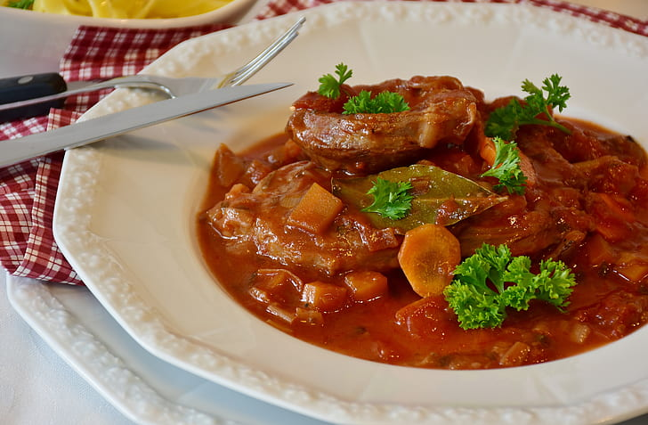

Osso Buco

Description:
Ossobuco is a specialty of Lombard cuisine of cross-cut veal shanks braised with vegetables, white wine, and broth.
It is often garnished with gremolada and traditionally served with either risotto alla milanese or polenta, depending on the regional variation.
Ingredients:
- ¼ cup all-purpose flour
- 2 teaspoons salt
- ¼ teaspoon ground black pepper
- 2 pounds veal shank
- 3 tablespoons butter
- 3 tablespoons olive oil
- 1 cup chopped onion
- 1 cup thinly sliced carrots
- ½ cup chopped celery
- 2 cloves garlic, crushed
- 1 (8 ounce) can tomato sauce
- 1 cup water
- 1 teaspoon dried basil
- 1 teaspoon dried thyme
- 3 sprigs fresh parsley
- 1 bay leaf
Steps:
-
In a shallow dish, stir together flour, salt, and black pepper. Dredge meat in seasoned flour.
-
In a large skillet, melt butter with oil over medium heat. Brown meat. Remove meat from pan, and set aside.
-
Add onion, carrots, celery, and garlic to drippings in pan. Cook and stir for about 5 minutes.
-
Stir in tomato sauce, water, basil, thyme, parsley, and bay leaf.
-
Return meat to pan. Bring to a boil, and reduce heat to simmer. Cover, and cook for 2 1/2 hours.
Back to Menu!